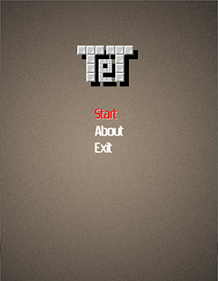
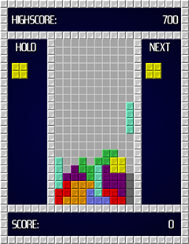
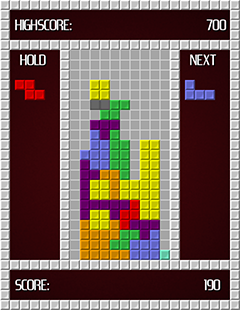

TeT is a tetris clone written in C# using XNA framework.
Use arrows to control falling blocks, space to drop, and shift to hold.
Screenshots:



Gameplay:
Downloads:
Version with installer
Portable version (download if you already have XNA installed)
Contact:
kgabis [at] gmail [dot] com
.
..:
2012 Krzysztof Gabis